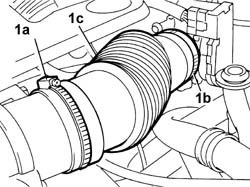
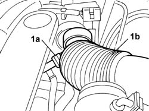

1048A47 SLEEVE FROM RIGID PIPE TO THROTTLE BODY - R R
- Path
- Procedures > 10 ENGINE > 1048 ENGINE AIR SUPPLY CIRCUIT > 1048A VACUUM AIR CIRCUIT > 1048A47 SLEEVE FROM RIGID PIPE TO THROTTLE BODY - R R
- Kind
- repair procedure (removal / refitting; the operation number is the code)
- Applies to
- engines: 3.0 24V V6; all production periods
- Interactive page
- https://sloeber94.github.io/elrnDB-fUlss/en/#/179007007
Applies to: engines: 3.0 24V V6; all production periods
 Removing
Removing
 Refitting
RefittingOp. 5010B18 CLIMATE CONTROL UNIT AIR INTAKE - R.R.
1. Loosen the bands (1a) and (1b) then detach the hose (1c) from the rigid pipe on the air filter and from the throttle casing.

Applies to: engines: 3.0 24V V6; all production periods
1. Disconnect the engine oil vapour recovery pipe (1a) and remove the hose (1b) from the vehicle.

Applies to: engines: 3.0 24V V6; all production periods
Refitting
Removing- Connect the oil vapour recovery pipe to the hose.
- Connect the hose to the rigid pipe on the air filter and to the throttle casing.
- Tighten the retaining bands.
Topics linked from this page (1)
Topics that link to this page (30)
- 0010T44 CHANGE AUTOMATIC TRANSMISSION FLUIDS
- 0010T45 AUTOMATIC TRANSMISSION FLUID CHECK LEVEL AND TOP UP IF NECESSARY
- 1004B14 POWER UNIT WITH AUTOMATIC TRANSMISSION R + R
- 1048A59 TUBAZIONE DA DEBIMETRO A MANICOTTO CORPO FARFALLATO - S.R.
- 1056B14 THROTTLE CASE - R + R
- 1056B50 COOLANT TEMPERATURE SENSOR - R + R
- 1072B10 INLET MANIFOLD - R + R AND REPLACE SEAL
- 1072B50 SLEEVES CONNECTING AIR CAPACITY BOX TO INLET MANIFOLD IS - R+R
- 1080B39 RIGHT CATALYTIC PRECONVERTER R R OR REPLACE CYLINDER HEAD GASKET
- 1080B97 RIGHT REAR LAMBDA SENSOR ON CATALYTIC CONVERTER R R
- 1088D34 RIGID PIPE/CONNECTOR (ONE) FOR ENGINE COOLING CIRCUIT - R.R.
- 1088D32 <x>COOLANT MANIFOLD IN CYLINDER HEAD - R&R</x>
- 1088D53 RIGID SUPPLY OR RETURN PIPES FOR ENGINE OIL HEAT EXCHANGER - R.R.
- 1088C30 THERMOSTAT UNIT - R+R
- 2130A38 AUTOMATIC TRANSMISSION FLUID HEAT EXCHANGER - R + R - INCLUDING LEVEL TOP UP IF NECESSARY
- 2130A10 AUTOMATIC TRANSMISSION - R + R
- 2130A40 COOLANT SUPPLY PIPE TO AUTOMATIC TRANSMISSION FLUID HEAT EXCHANGER - R.R.
- 2130A44 AUTOMATIC TRANSMISSION FLUID HEAT EXCHANGER COOLANT RETURN PIPE - R.R.
- 2130B36 AUTOMATIC TRANMISSION VALVE COVER R R
- 2130B40 GEAR SELECTION SOLENOID UNIT - R R
- 2130B12 AUTOMATIC TRANSMISSION TORQUE CONVERTER - R+R
- 2130B48 GEAR SELECTOR ON AUTOMATIC TRANSMISSION - R R
- 2135A12 GEAR ENGAGEMENT CABLE - R R
- 2135B72 ELECTRONIC AUTOMATIC TRANSMISSION INPUT RPM SENSOR - R R
- 2135B58 ELECTRONIC AUTOMATIC TRANSMISSION SYSTEM WIRING - R R
- 2135B74 ELECTRONIC AUTOMATIC TRANSMISSION OUTPUT RPM SENSOR - R R
- 5510C18 RIGHT HAND CYLINDER HEAD IGNITION COIL - R+R
- 5510C36 RPM SENSOR - R.R.
- 5510C44 KNOCK SENSOR (ONE) - R+R
- 5510D10 SPARK PLUGS - R+R